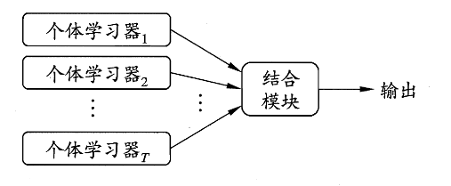
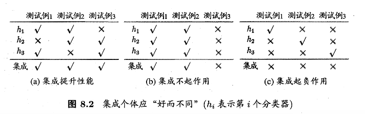
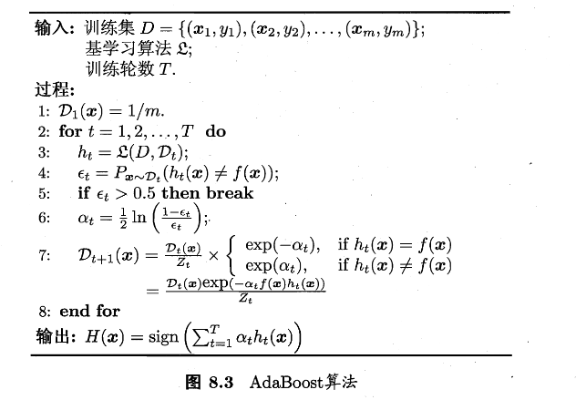
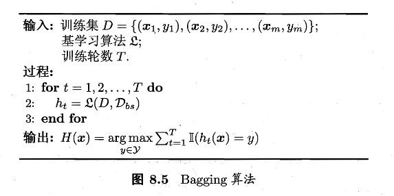
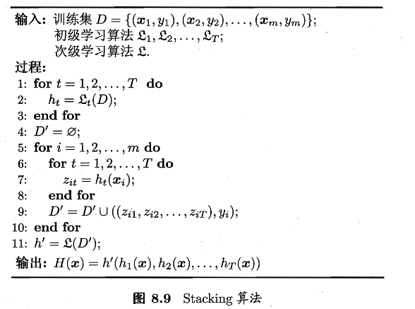
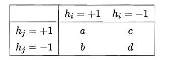
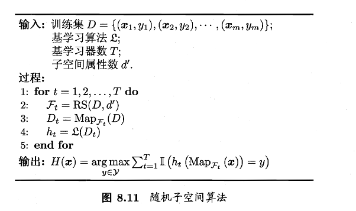

第八章 集成学习
集成学习是一种机器学习思想：把多个模型的预测结果进行组合，从而得到比单个模型更稳定、更准确的最终预测
个体与集成
集成学习是通过构建并结合多个个体学习器来完成学习任务，又称“多分类器系统”、“基于委员会的学习”
其基本流程为：多个个体学习器 \(\rightarrow\) 结合模块 \(\rightarrow\) 最终输出

个体学习器的类型
同质集成：
- 个体学习器通常由同一种现有的学习算法从训练数据产生，此时集成中只包含同种类型的个体学习器
- 同质集成中的个体学习器也称为“基学习器”，对应算法称为“基学习算法”
异质集成：
- 个体学习器使用不同的学习算法，类型也不同
- 此时个体学习器不称为“基学习器”，而是 组件学习器
好而不同：集成成功的关键条件
准确性：每个个体学习器不能太差；且至少要优于随机猜测
多样性：不同学习器犯错方式不同；且学习器之间存在差异

投票集成的理论分析（二分类）
假设：标签 \(y\in\{-1,+1\}\)；每个基分类错误率 \(\epsilon\)；错误相互独立
则对每个基分类器 \(h_i\) 有： $$ P(h_i(\boldsymbol{x})\ne f(\boldsymbol{x}))=\epsilon\tag{8.1} $$ 我们假设集成通过简单投票法结合 \(T\) 个基分类器，若有超过半数的基分类器正确，那么集成分类就正确。投票规则如下： $$ H(\boldsymbol{x})=\text{sign}\left(\sum_{i=1}^Th_i(\boldsymbol{x})\right)\tag{8.2} $$ 由一般经验可得，当集成中个体分类数目 \(T\) 增大，集成的错误率将以指数级下降。即 \(T\rightarrow\infty\) 时，错误率趋近于 0
现实情况
刚刚的理论分析中，我们有一个很强的假设：各基学习器错误相互独立；不过由于个体学习器往往在同一数据上训练，错误高度相关。
因此可以得到如下的核心矛盾：提高准确性 和 增加多样性 两者通常互相制约
所以如何产生并结合“好而不同“的个体学习器就是集成学习研究的核心
集成方法的两大类别
根据个体学习器的生成方式，目前的集成学习方法大致可以分为两类，如下
序列化方法：个体学习器之间存在强依赖关系、必须串行生成，代表为 Boosting
并行化方法：个体学习器之间不存在强依赖关系、可同时生成，代表为 Bagging 和 随机森林
Boosting
Boosting是将弱学习器逐步提升为强学习器的集成方法，核心机制如下：
- 现在初始数据分布上训练一个基学习器
- 根据该学习器的错误情况 调整样本分布
- 让后续学习器 更加关注之前分错的样本
- 重复上述过程，直到训练出 \(T\) 个基学习器
- 对所有基学期器进行 加权组合，形成最终模型
所以 Boosting 的学习器生成是序列化的
AdaBoost 的加性模型视角

AdaBoost的最终模型是一个 加性模型 $$ H(\boldsymbol{x})=\sum_{t=1}^T\alpha_th_t(\boldsymbol{x})\tag{8.4} $$ 其中：
- \(h_t(\boldsymbol{x})\in\{-1,+1\}\)：第 t 个基分类器
- \(\alpha_t\) 对应权重
而AdaBoost的优化目标是 最小化指数损失函数 $$ \ell_{exp}(H\mid\mathcal{D})=\mathbb{E}_{x\sim\mathcal{D}}\left[e^{-f(\boldsymbol x)H(\boldsymbol x)}\right] \tag{8.5} $$ 其中：
- \(f(\boldsymbol{x})\) 是真实分类函数，\(f(\boldsymbol{x})\in\{-1,+1\}\)
- \(\mathcal{D}\) 为样本分布
指数损失最优解的贝叶斯解释
我们要求最小化指数损失函数，那么很容易想到让式(8.5)对式(8.4)也就是 \(H(\boldsymbol{x})\) 求偏导，如下
再令其为0，解得
进而得到
到这里，式(8.8)证明了 \(\text{sign}(H(\boldsymbol{x}))\) 达到了贝叶斯最优错误率。也就是说，如果指数损失函数最小化，那么分类错误率也将最小（取代了0/1损失函数的位置）
那么，我们可以将此函数作为0/1损失函数的替代，来进行优化，即式（8.5）处提到的AdaBoost优化目标
基学习器权重 \(\alpha_t\) 的推导
AdaBoost中，第一个基分类器 \(h_1\) 通过直接将基学习算法用于初始数据分布得到，此后迭代生成 \(h_t\) 和 \(\alpha_t\)
结合上式（8.4）和（8.8），我们发现，当基分类器 \(h_t\) 基于分布 \(\mathcal{D_t}\) 生成后，该基分类器的权重 \(\alpha_t\) 应该使得 \(\alpha_t h_t\) 最小化指数损失函数
考虑单轮优化：
我们记 \(\epsilon_t= P_{x \sim D_t}\bigl(h_t(x) \ne f(x)\bigr)\)(，可以将上式化为一般式：
这里的 \(\epsilon_t\) 是算法第4行内容，误差率
由于是求权重 \(\alpha_t\)，那么将上式对 \(\alpha_t\) 求导：
令(8.10)为零，解得
算法第6行，分类器权重更新公式
样本分布更新的理论来源
经过一次迭代后，整体模型会更新为
于是指数损失也会随之发生变化
由于 \(f^2(x)=h_t^2(x)=1\) ，所以对 \(e^{-f(x)h_t(x)}\) 作泰勒展开近似，如下
AdaBoost中，真实函数与基分类器的输出都被编码为 \(\{-1,+1\}\)，因此有 \(f^2(x)=h_t^2(x)=1\)
将这个性质带入到(8.17)也可以进行解释，其中 \(\mathbb{I}(\cdot)\) 为示性函数，内部条件成立时它的输出为1，否则为0
那么可以得到理想的基学习器为
又由于
所以可以得到
即：基学习器在分布 \(\mathcal{D_t}\) 下最小化分类误差
接下来就是更新 \(\mathcal{D_t}\) 和 \(\mathcal{D_{t+1}}\)，
在 \(t\) 轮种，我们已经固定 \(H_{t-1}\)，要选 \(h\) 让指数损失下降，我们可以把目标整理为
分母中 \(\mathbb{E}_{x \sim \mathcal{D}}\left[e^{-f(x)H_{t-1}(x)}\right]\) 与 x 无关，对 \(\arg\max_h\) 来说只是常数缩放
我们观察(8.14)里乘在 \(f(x)h(x)\) 前面的权重函数
如果原始数据分布记为 \(\mathcal{D}(x)\)，那么把它按 \(w_t(x)\) 重新加权，就可以得到一个新的分布，如下
展开来就是
依次类推
算法第7行，样本分布更新公式
分析算法
从偏差-方差分解的角度来看，Boosting主要关注降低偏差，因此可以将泛化能力较弱的学习器提升为强模型
示例
root@iZbp1gtqhrbrar9e0rt59yZ:~/rl/8# python3 2.py
===== 数据集 =====
i= 0 x=[0.1, 0.2] y=1
i= 1 x=[0.2, 0.1] y=1
i= 2 x=[0.35, 0.8] y=1
i= 3 x=[0.4, 0.7] y=-1
i= 4 x=[0.6, 0.3] y=-1
i= 5 x=[0.7, 0.4] y=-1
i= 6 x=[0.8, 0.9] y=-1
i= 7 x=[0.9, 0.85] y=1
===== AdaBoost 迭代开始 =====
----- Round t=1 -----
D_t： ['0.125000', '0.125000', '0.125000', '0.125000', '0.125000', '0.125000', '0.125000', '0.125000']
选择的基学习器 h_t：
feature=0, threshold=0.375000, polarity=1
h_t(x_i)： [1, 1, 1, -1, -1, -1, -1, -1]
加权错误率 epsilon_t = P_{x~D}(h!=y) = 0.125000
alpha_t = 1/2 ln((1-eps)/eps) = 0.972955 (公式8.11)
F_t(x_i) = sum_{k<=t} alpha_k h_k(x_i) (公式8.4)
['0.972955', '0.972955', '0.972955', '-0.972955', '-0.972955', '-0.972955', '-0.972955', '-0.972955']
sign(F_t)： [1, 1, 1, -1, -1, -1, -1, -1]
训练集0/1错误率：0.125000
指数损失 l_exp(H|D) = E[exp(-f(x)H(x))] (公式8.5)
均匀经验平均：0.661438
按当前 D_t 加权：0.661438
D_{t+1}(i) = D_t(i) * exp(-alpha_t f(x_i) h_t(x_i)) / Z_t (公式8.19)
未归一化： ['0.047246', '0.047246', '0.047246', '0.047246', '0.047246', '0.047246', '0.047246', '0.330719']
Z_t = sum_i 未归一化 = 0.661438
D_{t+1}： ['0.071429', '0.071429', '0.071429', '0.071429', '0.071429', '0.071429', '0.071429', '0.500000']
----- Round t=2 -----
D_t： ['0.071429', '0.071429', '0.071429', '0.071429', '0.071429', '0.071429', '0.071429', '0.500000']
选择的基学习器 h_t：
feature=0, threshold=0.850000, polarity=-1
h_t(x_i)： [-1, -1, -1, -1, -1, -1, -1, 1]
加权错误率 epsilon_t = P_{x~D}(h!=y) = 0.214286
alpha_t = 1/2 ln((1-eps)/eps) = 0.649641 (公式8.11)
F_t(x_i) = sum_{k<=t} alpha_k h_k(x_i) (公式8.4)
['0.323314', '0.323314', '0.323314', '-1.622597', '-1.622597', '-1.622597', '-1.622597', '-0.323314']
sign(F_t)： [1, 1, 1, -1, -1, -1, -1, -1]
训练集0/1错误率：0.125000
指数损失 l_exp(H|D) = E[exp(-f(x)H(x))] (公式8.5)
均匀经验平均：0.542810
按当前 D_t 加权：0.902334
D_{t+1}(i) = D_t(i) * exp(-alpha_t f(x_i) h_t(x_i)) / Z_t (公式8.19)
未归一化： ['0.136775', '0.136775', '0.136775', '0.037302', '0.037302', '0.037302', '0.037302', '0.261116']
Z_t = sum_i 未归一化 = 0.820652
D_{t+1}： ['0.166667', '0.166667', '0.166667', '0.045455', '0.045455', '0.045455', '0.045455', '0.318182']
----- Round t=3 -----
D_t： ['0.166667', '0.166667', '0.166667', '0.045455', '0.045455', '0.045455', '0.045455', '0.318182']
选择的基学习器 h_t：
feature=1, threshold=0.875000, polarity=1
h_t(x_i)： [1, 1, 1, 1, 1, 1, -1, 1]
加权错误率 epsilon_t = P_{x~D}(h!=y) = 0.136364
alpha_t = 1/2 ln((1-eps)/eps) = 0.922913 (公式8.11)
F_t(x_i) = sum_{k<=t} alpha_k h_k(x_i) (公式8.4)
['1.246227', '1.246227', '1.246227', '-0.699683', '-0.699683', '-0.699683', '-2.545510', '0.599600']
sign(F_t)： [1, 1, 1, -1, -1, -1, -1, 1]
训练集0/1错误率：0.000000
指数损失 l_exp(H|D) = E[exp(-f(x)H(x))] (公式8.5)
均匀经验平均：0.372557
按当前 D_t 加权：0.389788
D_{t+1}(i) = D_t(i) * exp(-alpha_t f(x_i) h_t(x_i)) / Z_t (公式8.19)
未归一化： ['0.066227', '0.066227', '0.066227', '0.114391', '0.114391', '0.114391', '0.018062', '0.126433']
Z_t = sum_i 未归一化 = 0.686349
D_{t+1}： ['0.096491', '0.096491', '0.096491', '0.166667', '0.166667', '0.166667', '0.026316', '0.184211']
----- Round t=4 -----
D_t： ['0.096491', '0.096491', '0.096491', '0.166667', '0.166667', '0.166667', '0.026316', '0.184211']
选择的基学习器 h_t：
feature=0, threshold=0.375000, polarity=1
h_t(x_i)： [1, 1, 1, -1, -1, -1, -1, -1]
加权错误率 epsilon_t = P_{x~D}(h!=y) = 0.184211
alpha_t = 1/2 ln((1-eps)/eps) = 0.744039 (公式8.11)
F_t(x_i) = sum_{k<=t} alpha_k h_k(x_i) (公式8.4)
['1.990265', '1.990265', '1.990265', '-1.443722', '-1.443722', '-1.443722', '-3.289548', '-0.144439']
sign(F_t)： [1, 1, 1, -1, -1, -1, -1, -1]
训练集0/1错误率：0.125000
指数损失 l_exp(H|D) = E[exp(-f(x)H(x))] (公式8.5)
均匀经验平均：0.288848
按当前 D_t 加权：0.371399
D_{t+1}(i) = D_t(i) * exp(-alpha_t f(x_i) h_t(x_i)) / Z_t (公式8.19)
未归一化： ['0.045852', '0.045852', '0.045852', '0.079198', '0.079198', '0.079198', '0.012505', '0.387656']
Z_t = sum_i 未归一化 = 0.775312
D_{t+1}： ['0.059140', '0.059140', '0.059140', '0.102151', '0.102151', '0.102151', '0.016129', '0.500000']
----- Round t=5 -----
D_t： ['0.059140', '0.059140', '0.059140', '0.102151', '0.102151', '0.102151', '0.016129', '0.500000']
选择的基学习器 h_t：
feature=1, threshold=0.750000, polarity=-1
h_t(x_i)： [-1, -1, 1, -1, -1, -1, 1, 1]
加权错误率 epsilon_t = P_{x~D}(h!=y) = 0.134409
alpha_t = 1/2 ln((1-eps)/eps) = 0.931264 (公式8.11)
F_t(x_i) = sum_{k<=t} alpha_k h_k(x_i) (公式8.4)
['1.059001', '1.059001', '2.921530', '-2.374986', '-2.374986', '-2.374986', '-2.358284', '0.786826']
sign(F_t)： [1, 1, 1, -1, -1, -1, -1, 1]
训练集0/1错误率：0.000000
指数损失 l_exp(H|D) = E[exp(-f(x)H(x))] (公式8.5)
均匀经验平均：0.197047
按当前 D_t 加权：0.301879
D_{t+1}(i) = D_t(i) * exp(-alpha_t f(x_i) h_t(x_i)) / Z_t (公式8.19)
未归一化： ['0.150080', '0.150080', '0.023304', '0.040253', '0.040253', '0.040253', '0.040931', '0.197028']
Z_t = sum_i 未归一化 = 0.682182
D_{t+1}： ['0.220000', '0.220000', '0.034161', '0.059006', '0.059006', '0.059006', '0.060000', '0.288820']
===== 最终强分类器 =====
H(x) = sign( sum_t alpha_t h_t(x) )
t=1: alpha=0.972955, stump=(feature=0, thr=0.375000, pol=1)
t=2: alpha=0.649641, stump=(feature=0, thr=0.850000, pol=-1)
t=3: alpha=0.922913, stump=(feature=1, thr=0.875000, pol=1)
t=4: alpha=0.744039, stump=(feature=0, thr=0.375000, pol=1)
t=5: alpha=0.931264, stump=(feature=1, thr=0.750000, pol=-1)
这里算出来的最终模型如下；各个基分类器属性参考feature，阈值参考thr，大于thr则取pol值，负责取-pol：
然后我们假设样本 \(x=[0.30,0.80]\) 带入计算可以得到
得到 \(F(x)=2.921530>0\Rightarrow H(x)=sign(F(x))=+1\)
Bagging 和 随机森林
刚刚讲了序列化的生成方法，下面讲并行化生成方法
总体思路
为了得到泛化能力更强的集成模型，关键是让多个基学习器尽量“有差异”（降低相关性），但又不能差到学不到东西。
做法是：对训练集进行多次采样，得到多个相互有交叠的训练子集，在每个子集上训练一个基学习器，再把它们组合起来。
Bagging

核心做法基于自助采样法（第2章）：
- 对大小为 \(m\) 的训练集做 自助采样，每次从原训练集中“有放回”抽取 \(m\) 次，形成一个采样集
- 重复 \(T\) 次，得到 \(T\) 个采样集，训练 \(T\) 个基学习器
- 集成输出：分类问题采用多数投票；回归问题采用平均
之前证明过，自助采样法的训练集中大约63.2% 的样本会至少出现一次进入采样集，其余36.8%没被抽到。
因为每个基学习器都有一部分没见过的样本，可以用这些样本来做该学习器的验证。把对每个样本“没用它训练过的那些学习器”的预测汇总起来，就可以得到 OOB 预测，进而估计泛化误差（相当于一种“自带的交叉验证”，不需要额外划分验证集
令 \(H^{oob}(x)\) 表示对样本 \(x\) 的包外预测，即仅考虑哪些未使用 \(x\) 训练的基学习器在 \(x\) 上的预测，有
用 Bagging 泛化误差的包外估计为
随机森林RF
Bagging的扩展变体，可以看作：Bagging+决策树+额外的属性随机性
具体来说：对基决策树的每个节点，先从该节点的属性集合中随机选择一个包含 \(k\) 个属性的子集，然后再从这个子集中选择一个最优属性用于划分。
这样的话就通过控制参数 \(k\) 达到控制随机性的目的
虽然引入特征随机性会让单棵树变弱，但是树与树之间的相关性更低，整体集成变得更强，泛化误差往往更低
结合策略
截至目前，我们的基学习器相关的算法学得差不多了，接下来是如何结合的问题。
平均法：用于回归/数值输出
假设有 \(T\) 个基学习器，输出数值为 \(h_i(x)\in\mathbb{R}\)
简单平均：
加权平均：
权重通常从数据中学习，但**权重参数多**、训练数据不足或噪声大时容易过拟合，所以实践里“学权重”不一定比简单平均强。
投票法：用于分类
设类别集合 \(\{c_1,\dots,c_N\}\) 。书里把第 \(i\) 个学习器在样本 \(x\) 上对类别 \(c_j\) 的输出写成 \(h_i^j(x)\)
绝对多数投票：
若某类得票超过总票数的一半时输出该类，否则可以拒绝预测
- 这个“拒绝”机制适合对可靠性要求高的场景
- 若任务必须输出结果、不允许拒绝，则会退化为下面的相对多数
相对多数投票：
也就是哪个类票最多就选哪个；若并列最高就随机选一个
加权投票：
不过要注意：
- 不同学习器输出的“概率/得分”不可直接混用，需要先做概率校准（calibration），常见方法包括 Platt scaling、isotonic regression 等。
- 若学习器类型不同、概率尺度不可比，有时要先把概率转成硬标签再投票。
学习法：堆叠
核心思想就是再训练一个二级学习器/元学习器来做结合。
书中将个体学习器称为初级学习器，用于结合的学习器称为次级学习器或元学习器，算法如下

- 先训练 \(T\) 个初级学习器
- 用它们在样本 \(x_i\) 上的输出组成新特征向量 \(z_i=(h_1(x_i),\dots,h_T(x_i))\),并配上原标签 \(y_i\)，得到二级训练集 \(D’=\{(z_i,y_i)\}\)
- 在 \(D’\) 上训练二级学习器 \(h’\)，最终得到 \(H(x)=h’(h_1(x),\dots,h_T(x))\)
如过直接用训练初级学习器的同一批数据来生成 \(z_i\) ，二级学习器很容易过拟合。
标准做法一般是采用 交叉验证/留一法：对每个样本，用“没见过它”的初级模型输出作为它的二级特征（out-of-fold 预测），再训练二级学习器。
多样性
集成想要泛化强，个体学习器应“好而不同”：既要各自有一定准确性（好），又要彼此不一致/相关性低（不同）。本节给出一个回归任务下的理论分解，并介绍分类任务中常用的多样性度量与增强手段。
误差-分歧分解
假定有 \(T\) 个个体学习器 \(h_1,\dots,h_T\)。用加权平均得到集成输出 \(H(x)=\dfrac{1}{T}\sum_{i=1}^Tw_ih_i(x)\)。任务是回归：目标函数 \(f:\mathbb{R}^d\rightarrow\mathbb{R}\)
对样本 \(x\) ，定义学习器 \(h_i\) 的分歧为：
分歧 表示个体预测集成离集成预测偏离多少，偏离越大，多样性越强
于是根据式(8.27)进行加权平均，可以得到集成的“分歧”为
又由于个体学习器在样本 \(x\) 的平方误差则为
同理，集成在样本 \(x\) 的平方误差为
于是我们可以参考式(8.28)，定义个体误差的加权均值为
根据式(8.28)-(8.30)，进而得到下式
再进行一下变形
此式意味着：集成误差=个体误差均值-分歧。在个体误差均值固定时，分歧越大，集成误差越小
不过刚刚是离散态，通过权重 \(w_i\) 进行的集成，接下来扩展到连续态：
令 \(p(x)\) 为样本分布密度，对所有 \(x\) 积分，根据式(8.31)可以得到
同样，定义第 \(i\) 个学习器在全空间上的泛化误差与分歧项以及集成的泛化误差
然后定义加权均值
接下来，把式(8.33)-(8.35)带入(8.32)，可以得到总公式为：
即：个体越准确(\(\bar E\) 越小)、多样性越大(\(\bar A\) 越大)，集成越好
多样性度量
书中用二分类进行举例 \(y_i\in\{-1,+1\}\) 。常见的做法是度量两二分类器 \(h_i、h_j\) 的”相似/不相似“
对数据集 \(D=\{(x_1,y_1),\dots,(x_m,y_m)\}\) 统计 \(h_i、h_j\) 的预测组合如下

基于这个列联表，下面给出一些常见的多样性度量
不合度量：
\(dis_{ij}\) 的值域为 \([0,1]\),值越大则多样性越大
相关系数：
值域为 \([-1,1]\),\(\rho_{ij}=0\) 表示不相关，正值表示正相关，负值表示负相关
\(Q\) 统计量
与 \(\rho_{ij}\) 符号相同，\(\mid Q_{ij}\mid\le\mid\rho_{ij}\mid\)
\(\kappa-\) 统计量
其中
- \(p_1\)：两分类器“实际一致”的概率（在数据上估计）
- \(p_2\)：按边际分布推算的“随机一致”的概率
因此 \(\kappa\) 是“扣除偶然一致之后的一致性”。完全一致时 \(\kappa=1\)；若只相当于随机一致，\(\kappa\approx 0\)；在某些“比随机还不一致”的极端情况下可能为负。
多样性增强
- 数据样本扰动：从原始数据集产生不同训练子集，各子集训练不同个体。
Bagging的自助采样；AdaBoost的序列式重采样
- 输入属性扰动：用不同特征子空间训练不同个体。例如随机子空间算法

- 输出表示扰动：通过“改造标签/输出空间”制造差异
翻转法：随机改动少量训练样本标签；
ECOC：把多分类拆成一组二分类子任务训练多个分类器
- 算法参数扰动：对同一算法用不同随机参数/初始化/超参数训练得到差异个体
神经网络：不同初始化、网络结构、训练超参等
决策树：改变属性选择机制等